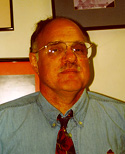

|
 Welcome to the Advance Program for the 24th ACM/SIGIR International Conference on Research and Development in Information Retrieval.You are cordially invited to come, to join us, to participate in this major technical information retrieval conference. There will be tutorials, keynote addresses, technical paper sessions, poster papers, demonstrations, exhibits, and workshops that will advance the state of the art of information retrieval and discuss many of the main issues and applications. The Program Committee, along with the Workshops Committee, the Tutorials Committee, the Poster Sessions Committee, the Demonstrations Committee, and the Exhibitions Committee, has put together an excellent combination of sessions to enrich anyone interested in information retrieval. The Local Arrangements Committee has made sure we have a variety of social programs and food offerings that promise to satisfy. Let me suggest that as soon as you make the positive decision to come to this great conference, please act quickly. Book one of the limited number of rooms at the conference hotel, and register for the conference to take advantage of the early-bird price structure. Please check out the conference web site at http://www.sigir2001.org for an overall view of the conference and for details about the conference.. If you have any questions, feel free to contact me. I shall look forward to seeing you in the city "that care forgot," in the Big Easy, in NuAwlins, as they say down here. "Laissez les bon temps rouler!" Donald H. Kraft, Conference
Chair
|